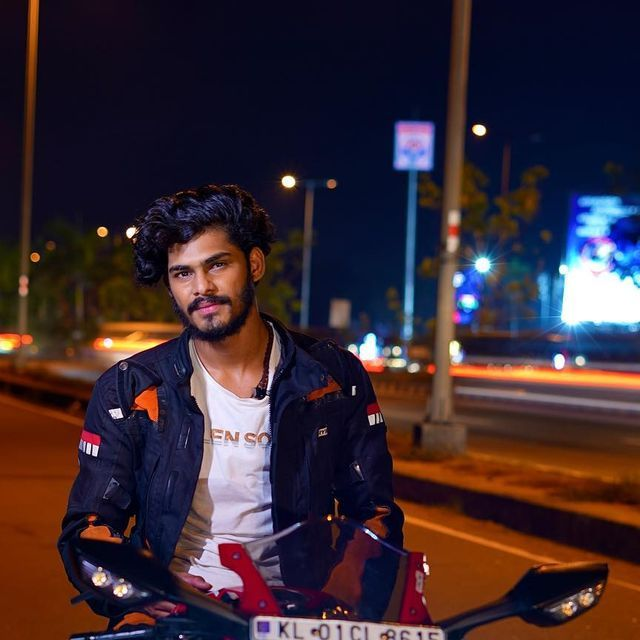

copy.jpg)
TTF Vasan is a well-known professional Indian YouTuber and social media influencer who most recently participated in the film "Indian PENAL LAW " and transitioned into cinema as an actor. His acknowledged "Twin Throttlers" YouTube channel, which has more than 3.37 million subscribers in July 2023
EARLY LIFE
TTF Vasan was born on June 29, 2000, in Coimbatore and raised in Mettupalaiyam, Coimbatore. His father's name is Pandiyan, who is a local cop in Coimbatore, and his mom, Sujatha, was doing home farming work. He completed his schooling at a renowed private school in Mettupalayam, and he graduated with a B.A. in English literature from the SNS Institute of Technology
CAREER

He began riding bikes at a young age and became passionate about it. In 2017, he started uploading footage of his bike trips on YouTube, where his channel swiftly gained attention. Vasan's videos are renowned for their excellent production values and exciting content. He frequently travels on his bike through difficult terrain at high speeds. Khan has also taken his bike on journeys around all of India. Vasan has a YouTube account in addition to being active on other social media sites. On Instagram, he has more than 1.1 million followers, and on Twitter, he has more than 100,000. Vasan is a rising star on YouTube and in social media in India who has taken over Tamilnadu people's social media profiles without being able to stop or avoid it.

FILM CARERR
IPL is an Drama Tamil Movie Directed by Karunakaran . the movie's Star Cast includes TTF Vasan , Kishore in the main lead roles. the music was composed by unknown.the film was produced by GR madhan Krishan under the banner Radha Film international.release date IPL movie is all set to release in theaters on 31 oct 2025.
TTF VASAN CONTROVERSIES

* He was charged with riding his bike at dangerously high speeds in 2019. Many people demanded his arrest when a video showing him riding his bike at 247 kmph went viral. Vasan claimed that he was having fun on an isolated racecourse and that he was not harming anybody in the process. * He was charged with encouraging superstition in 2020. He claimed to have seen a ghost in a video that he uploaded on his YouTube page. Many individuals criticised this film and charged Vasan with promoting superstition. Vasan expressed regret for the video and clarified that he had not intended to encourage superstition. * He was charged with encouraging caste discrimination in 2022. He delivered a casteist statement in a video that was uploaded on his YouTube channel. Vasan was compelled to apologise after this video drew severe condemnation. TTF Vasan is still a well-known YouTuber and social media personality despite these controversies. He has a sizable fan base of admirers who value his enthusiasm for biking and his captivating stuf
TTF VASAN ACCIDENT

The motovlogger TTF Vasan, was cruising down the highway, eager to show off his wheelie skills to the world. But little did he know that his daring stunt would come crashing down, quite literally. Vasan's Maharashtra road trip was marred by an accident on the Chennai-Bengaluru highway near Kancheepuram's Baluchetty Chatram village. CCTV footage revealed that the incident occurred on Sunday at 4:32 PM. The video of Vasan being catapulted off his bike and into the bushes has gone viral on social media, leaving netizens divided. While some have slammed the biker for his reckless driving, others have expressed concern for his well-being. The Baluchetty Chatram police have booked Vasan under sections 279 and 337 of the Indian Penal Code (IPC) for rash driving and causing hurt by an act endangering the life or personal safety of others
TTV VASAN ACCIDENT video